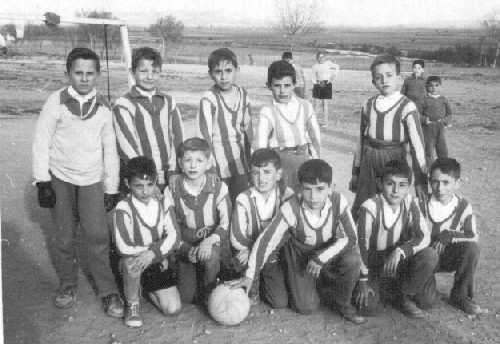
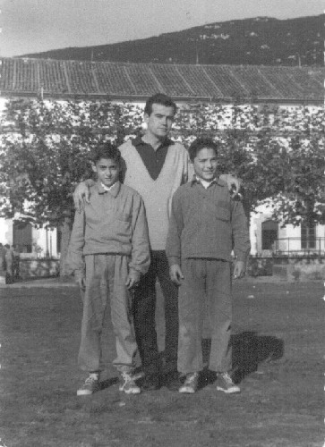
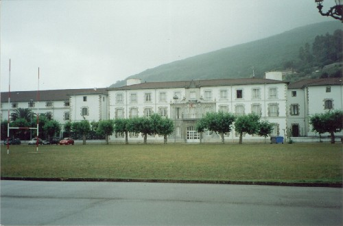
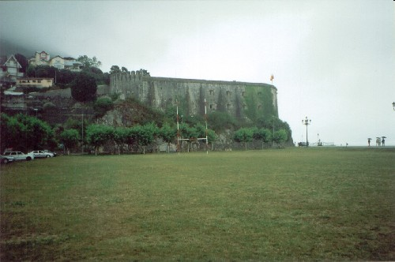
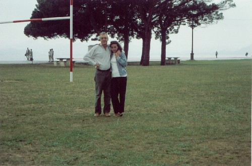
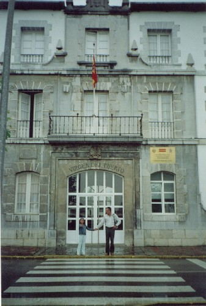

FOTOGRAFÍAS
de Jesús Mª García Hueto
 Marzo de 1961 En Quintana del Puente. Yo soy el segundo de la fila de abajo por la derecha. |
|  Noviembre de 1962 Esta otra es en Santoña, com mi hermano Manolo y D. ¿Juan Berruezo?, el profe de Ed. Física y F.E.N. |
 El Instituto, cuando fui a visitarlo, con mi familia, en el verano del 2002 |
 El Fuerte de San Martín, en el mismo año. |
 Con mi mujer, Ana, en el campo frente al Colegio |
 Con mi hija Anita, a las puertas del Centro |
| 1 | 2 |
|---|